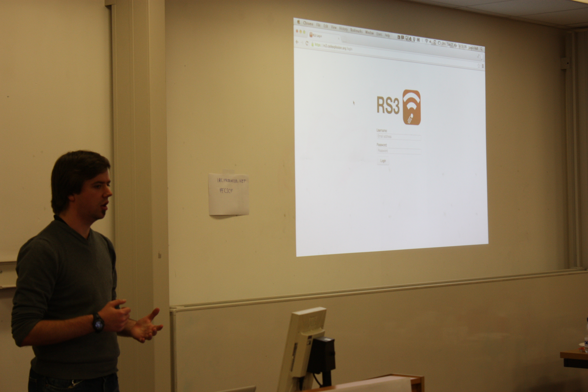
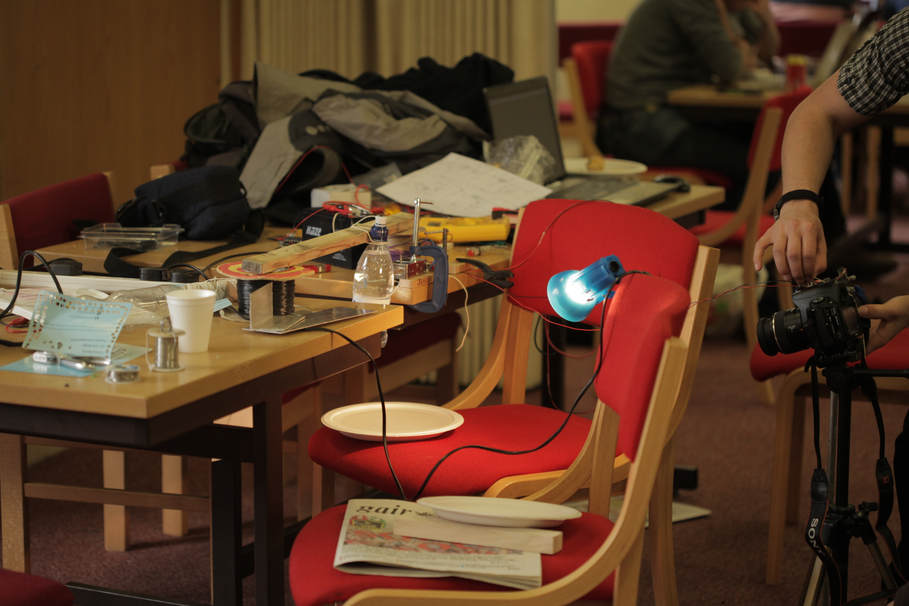

Cyber Security Makespace 2014
Cardiff Computer Science Community
Project maintained by HenryHoggard and georgesale Hosted on GitHub Pages — Theme by mattgraham
The 2014 CSCF Cyber Security Makespace
(Source files for the projects are incoming in the next few days - please bear with us!)Individual Hacker Award!
GoNuts (Jamie Hall) - RS3 (Google Reader replacement)
The unfortunate demise of Google Reader has created a void in the world of RSS Readers - one that GoNuts attempted to fill. Jamie created an alternative for the discerning person wanting to keep up with their favourite RSS feeds.GitHub

A massive thankyou to the sponsors of this event:
Cardiff University School of Computer Science and Informatics, Box UK, Digistump, linode, eysys, and GitHub.
Thanks to George Sale for the write up. You can find more of his work on his blog.
Media
Websites
Blog Post by Martin ChorleyEvent Website
cfhack Twitter page
EventBrite Signup Page (Archived)
Photos
 GoNuts (Jamie Hall) presenting RS3 EEESoc Digital Camera Automation project in action
 Team DDCH presents Kuushi
Team DDCH presents Kuushi eartub.es
eartub.es Keyboard Warriors with their game, Hacky
Keyboard Warriors with their game, Hacky The Wolverines working on Vinternships
The Wolverines working on Vinternships Martin Chorley's Dionysus
Martin Chorley's Dionysus